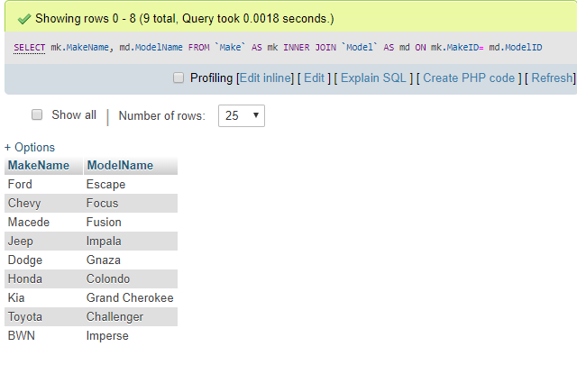

Why We Make Databases _Relational
ယနေ့ခေတ် business environment တွေကိုအပြိုင်အဆိုင်လုပ်ဆောင်နေကြတဲ့အချိန်မှာ companies တွေက mountains တွေရဲ့ data တွေကိုဘယ်လိုအသုံးပြုရမယ်နောက်ပြီးထူးခြားတဲ့ compatitive တွေကိုဘယ်လိုပြုလုပ်ယူရမယ်ဆိုတာကိုလေ့လာနေကြတာပဲဖြစ်ပါတယ်။အဲ့လိုတွေပြုလုပ်ဖို့အတွက် knowledge တွေက power တွေဖြစ်ပြီးတော့ database တွေကတော့အဲ့တာတွေရဲ့ foundation တွေပဲဖြစ်ပါတယ်။ကျွန်တော်တို့ SQL course တွေကိုလေ့လာရခြင်းရဲ့ရည်ရွည်ချက်ကတော့ rows အနည်းငယ်နဲ့ကျွန်တော်တို့သေးငယ်စွာအသုံးပြုနိုင်ရန်အတွက် database တွေကိုအသုံးပြုခြင်းပဲဖြစ်ပါတယ်။real world မှာတော့ database တွေကအလွန်ကိုကြီးမားပါတယ်။table တစ်ခုတည်းမှာ rows တွေmillions ပေါင်းများစွာပါရှိပြီးတော့ကိုကြီးမားတာပဲဖြစ်ပါတယ်။အဲ့တာတွေအတွက်အများဆုံးအသုံးပြုတဲ့ databases တွေကိုတော့ relational databases တွေလို့ခေါ်ပါတယ်။အဲ့ဒီ term တွေက databases structuring တွေကနေလာပါတယ်။ အဲ့ဒီနည်းလမ်းအတိုင်းပဲ tables တွေကအခြား table တွေနဲ့ link ချိတ်ဖို့အတွက် share attributes တွေကိုအသုံးပြုပြီးတော့လုပ်ဆောင်တာပဲဖြစ်ပါတယ်။ အဲ့ဒီ links တွေကတော့ tables တွေကြားထဲမှာရှိတဲ့ relationships တွေပဲဖြစ်ပါတယ်။နောက်ထပ်တစ်ခုကတော့ organization data တွေကကြီးထွာဖို့အတွက်လိုအပ်ပါတယ်။အဲ့ဒီအတွက်နဲ့ scale တွေရှိဖို့အတွက်ကိုသူတို့က database တွေလိုအပ်ပါတယ်။ အဲ့ဒီ links တွေကတော့ tables တွေကြားထဲမှာရှိတဲ့ relationships တွေပဲဖြစ်ပါတယ်။နောက်ထပ်တစ်ခုကတော့ organization data တွေကကြီးထွာဖို့အတွက်လိုအပ်ပါတယ်။အဲ့ဒီအတွက်နဲ့ scale တွေရှိဖို့အတွက်ကိုသူတို့က database တွေလိုအပ်ပါတယ်။database schema တွေက design တွေအလုပ်လုပ်တဲ့အခါမှာ report တွေရဲ့ input တွေပေါ်မှာအကျိုးသတ်ရောက်မှုတွေရှိပြီးတော့ အဲ့ဒီ database တွေပေါ်မှာသူတို့တွေက generate ပြုလုပ်နိုင်ပြီး performance ပြုလုပ်နိုင်ပါတယ်။application data storage အတွက် relational database တွေကဘာ့ကြောင့် standard ဖြစ်လာလဲဆိုတဲ့အကြောင်းပြချက်တွေအများကြီးရှိပါတယ်။အဲ့ဒီထဲကမှအချို့ကတော့ disk ပေါ်မှာလိုအပ်တဲ့ storage ကိုလျှော့ချပြီးတော့ data တွေကို eliminating redundant ပြုလုပ်ဖို့အတွက်ပဲဖြစ်ပါတယ်။well structure နဲ့ properly segmented data တွေက accessed ပြုလုပ်နိုင်မှာဖြစ်ပြီးတောမြန်မြန် Modified ပြုလုပ်နိုင်မှာပဲဖြစ်ပါတယ်။bad data တွေကတော့ bad reports တွေဖြစ်ဖို့ဦးတည်ပါတယ်။relational databases တွေက better data quality နဲ့ better reports တွေကိုဦးတည်ဖို့ရန်အတွက် data principles တွေကိုကောင်းမွန်စွာ enforce ပြုလုပ်ဖို့ရန်အတွက် schema designers တွေကိုခွင့်ပြုပေးပါတယ်။အဲ့တာတွေကတော့ relational database တွေကဘယ်လိုပြုလုပ်တယ်ဆိုတာတွေနဲ့အဲ့ဒီထဲမှာပါဝင်တဲ့ context တွေနဲ့ meaning တွေကိုဘယ်လိုပါဝင်တယ်ဆိုတာကိုလေ့လာထားတာပဲဖြစ်ပါတယ်။နောက်ထပ်သင်ခန်းစာမှာကျွန်တော်တို့ထပ်ပြီးလေ့လာသွားမှာကတော့ရှုပ်ထွေးတဲ့ SQL queries တွေကိုရေးတာတွေနဲ့ relational data တွေကိုအတူတကွချိတ်ဆက်ပြီးတော့ရေးတာပဲဖြစ်ပါတယ်။
Database Normalization
Database designers တွေက optimal storage တွေရရှိဖို့ရန်နဲ့ database tables ထဲမှာ data တွေကိုသို့လှောင်ဖို့အတွက် desired context တွေကို generate ပြုလုပ်နေတဲ့အခါမှာထမ်းဆောင်ဖို့ရန်အတွက်ကောင်းမွန်တဲ့ planning တွေရဖို့ရန်ပြုလုပ်ကြပါတယ်။ အဲ့ဒီ manner တွေပေါ်မှာ
relational database တွေကို design ပြုလုပ်ခြင်းတွေကို normailzation တွေလို့ခေါ်ပါတယ်။normalization ပြုလုပ်နေစဉ်အတောအတွင်းမှာ database schema designer တွေက data တွေအကြောင်းကိုစဉ်းစားပြီးတော့အဲ့တာတွေက business တွေအတွက်အရေးကြီးသလား ပြီးတော့အဲ့တာတွေကို
tables တွေထဲမှာဘယ်လိုကောင်းမွန်အောင် fix ပြုလုပ်မလဲဆိုတာတွေပဲဖြစ်ပါတယ်။သူတိုတွေက data တွေဘယ်နေရာမှာ repeat ဖြစ်နေသလဲဆိုတာတွေကိုရှာဖွေပါတယ် ပြီးတော့ဘယ် value ကအခြားတစ်ခုပေါ်မှာမှီခိုသလဲဆိုတာတွေကိုရှာဖွေပြီးတော့အဲ့တာတွေကို group ဖွဲ့ပြီးတော့
logically အရအတူတကွကောင်းမွန်တဲ့ thing တစ်ခုအဖြစ်အလုပ်လုပ်ရန်အတွက်ပဲဖြစ်ပါတယ်။ကျွန်တော်တို့ရိုးရှင်းတဲ့ဥပမာတစ်ခုကိုပြရမယ်ဆိုရင်တော့ spreadsheet ထဲမှာ dataset သို့မဟုတ် ကြီးမားတဲ့ table တစ်ခုထဲမှာစုပေါင်းပြီးရေးထားတာပဲဖြစ်ပါတယ်။အဲ့တာကကျွန်တော်တို့အတွက်ဖက်ဖို့ရန်လွယ်ကူပြီးတော့
row တွေ column တွေထပ်ထည့်ဖို့အတွက်တော့ကတော့ခက်ခဲပြီး maintain ပြုလုပ်ဖို့အတွက်ခက်ခဲပါလိမ့်မယ်။database designer အနေနဲ့ကြည့်မယ်ဆိုရင်တော့ ကျွန်တော်တို့ဥပမာထဲမှာပြထားတဲ့ TABLE က data groups တွေသုံးပိုင်းပါရှိတယ်ဆိုတာကိုသတိထားမိပါလိမ့်မယ်။အဲ့တာတွေကိုကျွန်တော်တို့ကအပိုင်းတွေတစ်ခုစီအဖြစ်ခွဲခြားပြစ်ဖို့လိုအပ်ပါတယ်။အဲ့လို
separation မျိုးကို normailzation လို့ခေါ်ပါတယ်။normalization process တွေက completion ဖြစ်အောင်ပြုလုပ်ပေးပါတယ်။designer တွေက data model တွေနဲ့အဆုံးသတ်ပြီးတော့တစ်ခုခုနဲ့တူညီနေပါတယ်။အဲ့တာကတော့ normalization process ရဲ့ crude representation
တွေပဲဖြစ်ပါတယ်။
DataModel tables
How Normalization Helps Us
database normalization ရဲ့ process ကိုမိတ်ဆက်ပြီးတဲ့နောက်မှာတော့အဲ့တာတွေကိုဘာ့ကြောင့်အသုံးပြုသလဲဆိုတာကိုနားလည်လာပါလိမ့်မယ်။ ဥပမာ sale data တွေအများကြီးပါတဲ့ row တွေနဲ့ spreadsheet တစ်ခုကိုလေ့လာကြည့်မယ်ဆိုရင် အဲ့ဒီ rows တွေတစ်ခုစီမှာ descriptive value
အချို့တွေပါဝင်ပါတယ်။storage space တွေအကုန်လုံးကတော့ product names တွေကိုထပ်ခါထပ်ခါထပ်ပြီးထည့်နိုင်အောင်အတွက် text တွေကို store ပြုလုပ်ဖို့အတွက်အသုံးပြုပါတယ်။ကျွန်တော်တို့ဥပမာထဲမှာပြထသလို product name ကိုခွဲထုပ်လိုက်မယ်ဆိုရင်တော့ လိုအပ်တဲ့
disk stprage space ကိုလျောချပေးမှာပဲဖြစ်ပါတယ်။နောက်ထပ်ကျွန်တေ်ာတို့ Product id တွေကိုပါတွဲပြီးထပ်ထည့်နိုင်တာပဲဖြစ်ပါတယ်။အဲ့ဒီ column ကတော့ spreadsheet ထဲမှာရှိတဲ့အခြား column တွေအတွက်ထပ်ခါထပ်ခါထည့်ပြီးအလုပ်လုပ်နိုင်တာပဲဖြစ်ပါတယ်။text
တွေရဲ့ list တစ်ခုစီကို normalizing ပြုလုပ်ခြင်းက crucial ဖြစ်လာပြီး disk space usage ကိုလျော့ချဖို့အတွက်ပဲဖြစ်ပါတယ်။1970 နဲ့ 1980 နှစ်အတွင်းမှာ company တွေကသူတို့ရဲ့ business systems တွေအတွက် hardware devices တွေပေါ်မှာပိုက်ဆံကုန်ကြမှုကိုလျော့ချဖို့အတွက်အသုံးပြုလာကြပါတယ်။
poorly structured data တွေနဲ့ problem တွေကို update anomaly လို့ခေါ်ပါတယ်။ အဲ့တာက normalization အတွက် ကြီးမားတဲ့ huge plus ဖြစ်ပါတယ်။update anomalies တွေနဲ့ data integrity တွေရဲ့ eforcements တွေအတွက်ဖယ်ရှားဖို့အတွက်အလားအလာရှိတာတွေပဲဖြစ်ပါတယ်။နောက်ပြီးအဲ့တာက
table ထဲမှာရှိတဲ့ row တစ်ခုကို opposed မှာရှိတဲ့ rows တွေအများကြီးမှာ update ပြုလုပ်ဖို့အတွက် application အတွက်ပိုပြီး efficient ဖြစ်ပါတယ်။ application တွေရဲ့ response times တွေမှာ second တွေကွာနေတာက user တွေရဲ့ experience တွေကိုပိုပြီးတော့ထောက်ပံ့ပေးနိုင်ပါတယ်။
Set Theory and Relational Databases
အခုကျွန်တော်တို့ဟာ relational database တွေအကြောင်းကိုပိုပြီးနားလည်လာပြီးဖြစ်ပါတယ်။ကျွန်တော်တို့က database table တွေကို disk တွေထဲမှာ data set တွေသိုလှောင်ဖို့အတွက်အသုံးပြုတာလို့ထင်နိုင်ပါတယ်။နောက်ပြီးကျွန်တော်တို့က update တွေကိုပြုလုပ်နိုင်ပြီးတော့ dates
တွေကိုလည်းထည့်နိုင်ဖြုတ်နိုင်ပါတယ်။ကျွန်တော်တို့က query တွေကိုအသုံးပြုတဲ့အခါမှာတော့ data တွေအကုန်လုံးကိုရရှိနိုင်ပါတယ်။အဲ့တာကို result set လို့ခေါ်ပါတယ်။settle up ဆိုတာကတော့တူညီတဲ့ things တွေနဲ့ group ဖွဲထားတာဖြစ်ပြီး relational databases
ထဲမှာအသုံးဝင်တဲ့ queries တွေက performing ပြုလုပ်ပေးတဲ့ foundation တွေပဲဖြစ်ပါတယ်။ ကျွန်တော်တို့က simple sets ရဲ့ဥပမာအချို့ကိုပြောပြပေးသွားမှာပဲဖြစ်ပါတယ်။set ဆိုတာကတော့ similar ဖြစ်တဲ့ things တွေကိုအတူတကွပေါင်းစပ်ထားတဲ့ Group တွေပဲဖြစ်ပါတယ်။ကျွန်တော်တို့အဝတ်အစားတွေကိုပေါင်းစပ်ပြီးတော့ဝတ်ထားတာတွေကိုလည်း
set လို့ခေါ်ပါတယ်။shirts, shoes, socks, coats တွေနဲ့အခြားလိုက်ဖက်တဲ့အဝတ်အစားတွေကိုတွဲဖတ်ဝတ်တာမျိုးတွေပဲဖြစ်ပါတယ်။clothing ဆိုတာကတော့အစုတစ်ခုဖြစ်ပြီးအဲ့ဒီအစုထဲမှာမှ shirts တွေကိုအစုတစ်ခုအဖြစ်ထပ်ပြီးခွဲနိုင်ပါတယ်။နောက်ထပ် fruits ဆိုတဲ့
set တစ်ခုဖြစ်ပြီးတော့အဲ့ဒီထဲမှာမှ apples တွေကို set တစ်ခုအဖြစ်ထပ်ပြီးသတ်မှတ်နိုင်ပါတယ်။ နောက်ထပ်ဥမပာတစ်ခုအနေနဲ့ လူတွေကို set ခွဲတာကိုပြောပြသွားမှာဖြစ်ပါတယ်။လူငားယောက်မှာတစ်းယောက်က banana ကိုကြိုက်တယ်ဆိုတာဆို့။နောက်ထပ် နှစ်ယောက်က apple
ကိုကြိုက်တယ်။နောက်ကျန်တဲ့နှစ်ယောက်ကတော့ banana ကော apple ကိုပါကြိုက်နှစ်သတ်တယ်ဆိုပါဆို့။အဲ့ဒီနှစ်ယောက်ကိုတော့ set နှစ်ခုရဲ့ကြားထဲမှာရှိတဲ့ intersection လို့ခေါ်ပါတယ်။လူတွေအကုန်လုံးကိုတော့ union လို့ခေါ်ပါတယ်။fruit တစ်မျိုးတည်းကိုသာကြိုက်တဲ့သူတွေကိုတော့
except လို့ခေါ်ပါတယ်။ကျွန်တေ်ာတို့တွေက interaction တွေ union တွေသို့မဟုတ် except တွေကို data တွေရဲ့ set တွေပေါ်မှာပြုလုပ်တဲအခါမှာအဲ့တာမျိုးတွေကို set operations လို့ခေါ်ပါတယ်။နောက်ပြီး tables တွေနဲ့ queries တွေက results တွေကို data
set လို့ခေါ်ပါတယ်။ကျွန်တေ်ာတို့တွေက port တွေ dynamic application တွေကနေ query တွေကိုရေးတဲ့အခါမှာတော့ datasets တွေနဲ့အမှန်တကယ်အလုပ်လုပ်ရမှာပဲဖြစ်ပါတယ်။ကျွန်တေ်ာတို့အောက်ပါဥပမာထဲမှာ set operations တွေကိုဖော်ပြထားတာပဲဖြစ်ပါတယ်။
Theoretical Groundwork
ကျွန်တော်တို့ဒီတစ်ခါမှာတော့ structure manner ထဲမှာ relational databases တွေက data တွေကိုဘယ်လို organize ပြုလုပ်လဲဆိုတာကိုလေ့လာရမှာပဲဖြစ်ပါတယ်။structure data တွေကတော့ manner တွေကိုဖြတ်ပြီးတော့ disk space တွေကိုလျှော့ချပါတယ်။redundant data တွေကို eliminates ပြုလုပ်တာတွေ updates anomailes တွေရဲ့ possibility တွေကို removes ပြုလုပ်တာတွေ query performance တွေကို boosts ပြုလုပ်တာတွေပဲဖြစ်ပါတယ်။ကျွန်တော်တို့က database normalization ပြုလုပ်တာကိုလေ့လာပြီးဖြစ်ပါတယ်။အဲ့တာ ကျွန်တေ်ာတို့ database design ထဲမှာ eliminating things တွေနဲ့ identifying ပြုလုပ်တဲ့လုပ်ငန်းစဉ်တွေပဲဖြစ်ပါတယ်။အဲ့တာတွေကကျွန်တော်တို့ database perform တွေကိုနှေးသွားအောင်ပြုလုပ်ပါလိမ့်မယ်။နောက်ထပ်တစ်ခုကတော့ကျွန်တော်တို့ sets တွေအကြောင်းကိုလေ့လာခဲ့တာပဲဖြစ်ပါတယ်။အဲ့တာတွေက table တွေကိုဘယ်လို relation ပြလုပ်ပေးတယ်ဆိုတာတွေကိုလေ့လာခဲ့တာပဲဖြစ်ပါတယ်။
Unique Keys
relational database တွေကို relational လို့ခေါ်ပါတယ်။ဘာ့ကြောင့်လဲဆိုတော့ tables တွေက comman attributes တွေကိုအသုံးပြုပြီးတော့ချိတ်ဆက်နေလို့ပဲဖြစ်ပါတယ်။attributes တွေကတော့ common data တွေနဲ့ columns တွေဖြစ်ပြီးတော့ data rows တွေနဲ့အတူတကွချိတ်ဆက်ထားတာပဲဖြစ်ပါတယ်။အဲ့ဒီ columns တွေကို keys တွေလိုခေါ်ပါတယ်။Database keys တွေကတော့ data တွေကိုအတူတကွချိတ်ဆက်ဖို့အတွက်တင်ပဲသုံးတာမဟုတ်ပါဘူး။အချို့ keys တွေက guarantee ရှိပြီးတော့ row တစ်ခုဆီကအခြားတစ်ခုကနေပြီးတော့ထင်ရှားနေတာပဲဖြစ်ပါတယ်။အခြား keys guarantee တွေကတော့ certain value တွေဖြစ်ပြီးတော့ particular column ထဲမှာ repeat ဖြစ်မနေပါဘူး။ ကျွန်တော်တို့ကအသုံးပြုတာအများဆုံးဖြစ်တဲ့ database case keys သုံးမျိုးကိုလေ့လာသွားမှာပဲဖြစ်ပါတယ်။unique keys , primary keys နဲ့ foreign keys စတာတွေပဲဖြစ်ပါတယ်။ပထမဆုံး unique keys ကိုလေ့လာကြည့်မယ်ဆိုရင်တော့အဲ့တာက အထူးသဖြင့် colomn တွေကိုတိကြအောင်သတ်မှတ်ပေးထားတာပဲဖြစ်ပါတယ်။အဲ့တာကြောင့် value တွေက repeated မဖြစ်နိုင်တာပဲဖြစ်ပါတယ်။unique key တွေကိုအသုံးပြုထားတဲ့အခါမှာ value တူတာတွေကိုထပ်ထည့်တဲ့အခါမှာတော့ အဲ့ဒီ row က rejected ဖြစ်နေတာပဲဖြစ်ပါတယ်။နောက်ထပ်ကျွန်တော်တို့က unique keys အကြောင်းရဲ့အခြား things အနည်းငယ်ကိုလည်းသိထားနိုင်ပါတယ်။schema တွေက permits ရှိရင်အဲ့တာတွေက null တွေလည်းဖြစ်နိုင်ပါတယ်။နောက်ပြီး table တစ်ခုထဲမှာ multiple unique keys တွေကိုလည်းအသုံးပြုနိုင်ပါတယ်။unique columns ထဲမှာရှိတဲ့values တွေကိုလည်း new values တွေအဖြစ်ပြောင်းနိုင်ပါတယ်။
Primary Keys
primary key guarantees data တွေက column တွေကြားထဲမှာဆိုရင် unique ဖြစ်တာပဲဖြစ်ပါတယ်။primary key က unique key တွေနဲ့ပုံစံတူပါတယ်။ဒါပေမယ့် primary key မှာတော့များစွာသော impulse တွေနဲ့ differences တွေအများကြီးရှိပါတယ်။unique keys တွေ primary keys တွေ unique
values တွေပဲဖြစ်ပါတယ်။unique key တွေက no value တွေကိုခွင့်ပြုပေးပါတယ်။ primary key တွေကတော့ဘယ်တော့မှ no value တွေကိုခွင့်ပြုပေးမှာမဟုတ်ပါဘူး။table တစ်ခုတိုင်းမှာတော့ primary key တစ်ခုဆီပဲပါဝင်ပါတယ်။ဒါပေမယ့် unique keys တွေအများကြီးရှိပါတယ်။နောက်ဆုံးကျွန်တော်တို့တွေက
primary key တွေရဲ့ value တွေကို modify မပြုလုပ်နိုင်ပါဘူး။ဒါပေမယ့် unique key တွေကိုတော့ modify ပြုလုပ်နိုင်ပါတယ်။ primary key တွေက numeric သို့မဟုတ် interger data type တွေဖြစ်နေစရာမလိုအပ်ပါဘူး။primary key တွေက number fields တွေကို
auto incrementing ဖြစ်အောင်ပြုလုပ်ပေးပါတယ်။number value တွေကိုအသုံးပြုခြင်းက text data တွေကို ဆန့်ကျင်ဖို့အတွက်ဖြစ်ပြီးတော့ disk storage space တွေကိုလျှော့ချဖို့အတွက်နဲ့ query result တွေကို speed up ပြုလုပ်ဖို့အတွက်အသုံးပြုတာပဲဖြစ်ပါတယ်။primary
key ထဲမှာ value ကိုကျွန်တော်တို့ null ထဲ့ပေးခဲ့ရင်တော့ allow ပြုလုပ်ပေးမှာမဟုတ်ပါဘူး။ဘာမှထည့်မပေးခဲ့ရင်တော့ auto increment နဲ့သတ်မှတ်ပေးမှာပဲဖြစ်ပါတယ်။database systems က id field တွေအတွက် generation တွေကို handle ပြလုပ်ပေးနိုင်တာပဲဖြစ်ပါတယ်။
Foreign Keys
unique key နဲ့ primary key တွေရဲ့ guarantee တွေကတော့ table ထဲမှာရှိတဲ့ row တစ်ခုဆီကိုသတ်မှတ်နိုင်တာဖြစ်ပြီးအဲ့ဒီ links တွေက table တစ်ခုကနေတစ်ခုကိုချိတ်ဆက်ပေးထားတာပဲဖြစ်ပါတယ်။ကျွန်တော်တို့ဒီတစ်ခါလေ့လာသွားမှာကတော့ foreign key အကြောင်းပဲဖြစ်ပါတယ်။ကျွန်တော်တို့တွေက
foreign key တွေကို table တစ်ခုကနေနောက်ထပ် table တစ်ခုကို pointer သို့မဟုတ် reference ပြုလုပ်ပေးတာလို့မြင်နိုင်ပါတယ်။foreign key ကိုတည်ဆောက်ဖို့အတွက်ကျွန်တော်တို့မှာ facet နှစ်မျိုးရှိပါတယ်။ကျွန်တော်တို့ကိုယ်တိုင် foreign key တွေကိုမတည်ဆောက်တာကပိုပြီးကောင်းမွန်ပါလိမ့်မယ်။database
designer တွေက table တွေထဲမှာ column properly တွေကို match ဖြစ်ဖို့အတွက်ပြုလုပ်ပေးပါလိမ့်မယ်။အဲ့ဒီ column တွေဟာ အခြား instruction တွေမပါပဲနဲ့ချိတ်ဆက်နေတယ်ဆိုရင်တော့လုံလုံလောက်လောက် smart မဖြစ်ပါဘူး။ အဲ့ဒီ instruction ကို constraint
specifically , foreign Key constraint လို့ခေါ်ပါတယ်။ကျွန်တော်တို့က constraint ဆိုတာကို rule တစ်ခုအဖြစ်မြင်နိုင်ပြီးတော့ database ထဲမှာ enforce ပြုလုပ်တာဖြစ်ပါတယ်။table နှစ်ခုရဲ့ကြားမှာforeign key constraint ကို enforce ပြုလုပ်ဖို့အတွက်
database ကိုတစ်ကြိမ် instructed ပြုလုပ်တယ်ဆိုရင် အဲ့တာက table ထဲမှာ foreign key တွေပါဝင်ဖို့အတွက် value တွေကို allow ပြုလုပ်မှာမဟုတ်ပါဘူး။ကျွန်တော်တို့ရဲ့ data relationships တွေရဲ့ validity တွေကိုကြိမ်းသေပြုလုပ်နိုင်ခြင်တယ်ဆိုရင်တော့အဲ့ဒီ
manner ကို့ referential intergrity လို့ခေါ်ပါတယ်။နောက်ပြီးအဲ့တာက good relational database တွေထဲကမှာအရေးအကြီးဆုံး aspect တစ်ခုဖြစ်ပါတယ်။ကျွန်တော်တို့ဥပမာထဲမှာပြထားသလိုပဲ foreign key တွေကိုလေ့လာနိုင်ပါတယ်။
One to Many Relationships
ကျွန်တော်တို့ုဆက်ပြီးလေ့လာသွားမှာကတော့ table relationship တွေပဲဖြစ်ပါတယ်။table တွေကြားထဲမှာတာ့ relationships သုံးမျိုးရှိပါတယ်။အဲ့တာတွေက one to one , one to many , many to many စတာတွေပဲဖြစ်ပါတယ်။အဲ့ဒီ type တွေကတော့ row တွေဘယ်နှစ်ခုကအခြားတစ်ဖက်မှာရှိတဲ့
relationship နဲ့ချိတ်ဆက်နေနိုင်လားဆိုတာကိုဖော်ပြပေးတာပဲဖြစ်ပါတယ်။one to many relationships တွေကတော့အသုံးပြုတာအများဆုံး relationship ရဲ့ type ပဲဖြစ်ပါတယ်။အဲ့တာကြောင့်ကျွန်တော်တို့က database design ထဲမှာတွေ့ရမှာပဲဖြစ်ပါတယ်။အဲ့ဒီ relationship
ရဲ့ type ကတော့ table ထဲမှာရှိတဲ့ row တစ်ခုကအခြား relationship တစ်ခုမှာရှိတဲ့ table ရဲ့ row တွေအများကြီးနဲ့ချိတ်ဆက်နိုင်တာကိုဆိုလိုတာပဲဖြစ်ပါတယ်။direction တစ်ခုထဲမှာမှအများကြီးဖြစ်ပွားနိုင်ပါတယ်။ကျွန်တော်တို့ relational table တွေထဲမှာ
foreign key ကိုကြည့်တဲ့အခါမှာဘယ် table မှာရှိတဲ့ id တွေက foreign key ဆိုတာကိုရှုပ်ထွေးနေပါလိမ့်မယ်။လွယ်ကူအောင်မှတ်သားနိုင်တာတစ်ခုကတော့ foreign key တွေက side တွေအများကြီးမှာရှိနေပါလိမ့်မယ်။ ကျွန်တောတို့ဥပမာထဲမှာဆိုရင်တော့ foreign key
တွေက sale table မှာရှိတဲ့ product id တွေပဲဖြစ်ပါတယ်။
Many to Many Relationships
ပြီးခဲ့တဲ့သင်ခန်းစာမှာတုန်းကကျွန်တေ်ာတို့ one to many ဆိုတဲ့ relationship တွေကိုလေ့လာခဲ့ပြီးဖြစ်ပါတယ်။ဒီတစ်ခါမှာတော့ကျွန်တော်တို့ many to many ဆိုတဲ့ relationship တွေကိုလေ့လာရမှာပဲဖြစ်ပါတယ်။relation type တွေဆိုတာကတော့ row တွေဘယ်လောက်ကအခြား site တစ်ခုနဲ့မှာရှိတဲ့
row တွေဘယ်လောက်နဲ့ချိတ်ဆက်နေတယ်ဆိုတာကိုဆိုလိုတာပဲဖြစ်ပါတယ်။အဲ့တာကြောင့် many to many relationship တွေကလည်း record တစ်ခုက table တွေအများကြီးနဲ့ချိတ်ဆက်နိုင်ပြီးတော့ second table မှာရှိတဲ့ row တစ်ခုက first table မှာရှိတဲ့ record တွေအများကြီးနဲ့ချိတ်ဆက်နိုင်တာပဲဖြစ်ပါတယ်။ကျွန်တောတို့က
many to many relationship type တွေ table နှစ်ခုရဲ့ကြားမျာအသုံးပြုတဲ့အခါမှာနောက်ထပ် table တစ်ခုထပ်ပြီးတော့လိုအပ်ပါတယ်။အဲ့ဒီ table ထဲမှာတော့ table နှစ်ခုလုံးထဲမှာရှိတဲ့ primary key တွေကိုထည့်ပေးရမှာပဲဖြစ်ပါတယ်။အဲ့ဒီနည်းလမ်းကကျွန်တော်တို့အသုံးပြုမယ့်
many to many relationship ကိုအကောင်းဆုံးဖြစ်စေပြီးတော့ one to many relationship နှစ်ခုနဲ့ချိတ်ဆက်ပေးထားတာပဲဖြစ်ပါတယ်။အသစ်ထပ်ထည့်လိုက်တဲ့ new table ကိုတော့တစ်ခါတစ်ရံမှာ junction table သို့မဟုတ် associative entity လို့လည်းခေါ်ပါတယ်။
One to One Relationships
ကျွန်တော်တို့ဒီတစ်ခါမှာတော့ one to one relationship တွေကိုလေ့လာသွားမှာပဲဖြစ်ပါတယ်။one to one relationship တွေကတော့ table တစ်ခုမှာရှိတဲ့ row တစ်ခုကအခြား table တစ်ခုမှာရှိတဲ့ row တစ်ခုနဲ့ပဲချိတ်ဆက်နိုင်မှာဖြစ်ပါတယ်။ကျွန်တေ်ာတို့တွေက one to one relation
design တွေရဲ့ရေးပေးထားရင်တော့ technically အရမှားစရာမရှိတော့ပါဘူး။ကျွန်တော်တို့ကလက်တွေ့အသုံးပြုတဲ့အခါမှာတော့ အဲ့ဒီ table နှစ်ခုကိုတစ်ခုတည်းအဖြစ်ပောင်းပြီးရေးပေးတာကပိုပြီးကောင်းပါတယ်။ဘာ့ကြောင့်လဲဆိုတော့ non ID column တွေအကုန်လုံးက ID
column တွေပေါ်မှာမှီခိုခြင်းမရှိတော့လို့ပဲဖြစ်ပါတယ်။နောက်ပြီး COLUMNS တွေကိုလျှော့ချပြီးအသုံးပြုဖို့အတွက်လည်းပဲကောင်းကောင်းအလုပ်လုပ်နိုင်လို့ပဲဖြစ်ပါတယ်။third party vendor တွေနဲ့လည်းပဲအလုပ်လုပ်နိုင်ပြီးတော့သူတို့ရဲ့ table တွေကို modify
ပြုလုပ်ဖို့အတွက် allow ပြုလုပ်ပေးဖို့မလိုအပ်ပါဘူး။ကျွန်တေ်ာတို့ application တွေရဲ့ functionaliyt တွေကို extend ပြုလုပ်ချင်တဲ့အခါမှာတော့ column တွေကိုထပ်ထည့်ပေးရမှာပဲဖြစ်ပါတယ်။

Modeling Table Relationships
ကျွန်တော်တို့ဒီတစ်ခါမှာတော့အပေါ်မှာလေ့လာခဲ့တဲ့ relationship သုံးမျိုးကို design process တွေထဲမှာဘယ်လိုအလုပ်လုပ်သလဲဆိုတာကိုလေ့လာသွားမှာပဲဖြစ်ပါတယ်။database တွေကို database architect တွေက designing ပြုလုပ်တဲ့အခါမှာသူတို့က tables တွေကြားထဲမှာ model relationships
တွေအတွက် special software တွေကိုအသုံးပြုကြပါတယ်။design process လုပ်နေစဉ်အတွင်းမှာတော့ model တွေက tables ထဲမှာရှိတဲ့ entities တွေအကြောင်းတွေနဲ့အလုပ်လုပ်ရတာပဲဖြစ်ပါတယ်။Entities တွေက physical database ထဲမှာရှိတဲ့ tables တွေထဲမှာဖြစ်ပေါ်လာတာပဲဖြစ်ပါတယ်။ဒါပေမယ့်ကျွန်တော်တို့က
design အတွင်းထဲမှာတော့ conceptual level တွေအကြောင်းကိုလေ့လာသွားမှာပဲဖြစ်ပါတယ်။အဲ့ဒီ model တွေကို database designers တွေကတည်ဆောက်ပြီးတော့ entity relationship diagrams လို့ခေါ်ပါတယ်။ကျွန်တော်တို့ depict relationships တွေကို modeling
tools တွေထဲမှာ database design တွေဘယ်လိုပြုလုပ်သလဲဆိုတာတွေကိုလေ့လာသွားမှာဖြစ်ပါတယ်။ database designer တွေက tables တွေကြားထဲမှာရှိတဲ့ relationship တွေကိုဖော်ပြဖို့အတွက် special notation တွေကိုအသုံးပြုပါတယ်။အသုံးပြုတာအများဆုံးဖြစ်တဲ့
notation style တစ်ခုကတော့ crow's foot notation လို့ခေါ်ပါတယ်။အဲ့တာကတော့ one to many relationship တွေကိုပြဖို့အတွက်ဖြစ်ပြီး symbol နဲ့အသုံးပြုတာပဲဖြစ်ပါတယ်။နောက်ထပ်ကျွန်တော်တို့ပုံထဲမှာဥပမာပြထားသလို lines ပေါ်မှာရှိတဲ့ကန့်လန့်ဖြတ်လိုင်းလေးတစ်ခုကတော့
one to one relationship ဆိုတာကိုဖော်ပြတာပဲဖြစ်ပါတယ်။နောက်ထပ် many to many relationship တွေကိုလည်းဖော်ပြထားပါတယ်။


Join Queries
ကျွန်တော်တို့လေ့လာခဲ့တာတွေကတော့ powerful ဖြစ်တဲ့ sql queries တွေကိုဘယ်လိုရေးရမယ်ဆိုတာတွေအတွက် foundation တွေပဲဖြစ်ပါတယ်။table တစ်ခုထက်ပိုပြီးတော့ချိတ်ဆက်ဖို့ပေါင်းစပ်ဖို့အတွက်ကျွန်တော်တို့က table join ဆိုတာတွေကိုအသုံးပြုနိုင်ပါတယ်။ကျွန်တော်တို့ query ထဲမှာ join ကိုအသုံးပြုခြင်းက database တွေထဲမှာ မတူညီတဲ့ table နှစ်ခုကနေ result set တစ်ခုအဖြစ်အတူတကွထွက်လာဖို့အတွက် data တွေကို mesh ပြုလုပ်ပေးဖို့အသုံးပြုပါတယ်။အသုံးပြုတာအများဆုံးဖြစ်တဲ့ joins types နှစ်ခုကတော့ inner join နဲ့ outer join တွေပဲဖြစ်ပါတယ်။join တွေက one to one တွေ one to many တွေနဲ့ many to many relationships တွေကိုအသုံးပြုနိုင်ပါတယ်။ကျွန်တောတို့ဥပမာထဲမှာတော့ table နှစ်ခုကနေပြီးတော့ result set table တစ်ခုထုပ်ပြပေးထားတာပဲဖြစ်ပါတယ်။
Inner Joins
Inner Join ကတော့ Sql join တွေထဲမှာအသုံးပြုတာအများဆုံးဖြစ်တဲ့အမျိုအစားတစ်ခုပဲဖြစ်ပါတယ်။join ဆိုတာကတော့ table နှစ်ခုထဲမှာရှိတဲ့ data တွေကို combine ပြုလုပ်ပေးတာပဲဖြစ်ပါတယ်။ကျွန်တော်တို့က reports တွေသို့မဟုတ် application တွေအတွက် queries တွေကိုရေးတဲ့အခါမှာ data တွေကိုပိုရဖို့အတွက်ကျွန်တော်တို့က table တစ်ခုထက်ပိုပြီးလိုအပ်ပါတယ်။အဲ့တာကြောင့်ကျွန်တော်တို့က table တွေအများကြီးချိတ်ဆက်ဖို့လိုအပ်ပါတယ်။ ကျွန်တော်တို့ဥပမာထဲမှာဖော်ပြထားသလိုပဲကျွန်တော်တို့ချိတ်ဆက်ချင်တဲ့ table နှစ်ခုကို join ဆိုတဲ့ keyword ကိုသုံးပြီးတော့ချိတ်ဆက်ပြထားပါတယ်။ဒါပေမယ့်ကျွန်တော်တို့က database ထဲမှာ table တွေကိုချိတ်ဆက်ဖို့အတွက် column နှစ်ခုကို on ဆိုတဲ့ keyword ရဲ့နောက်မှာရေးပေးရမှာပဲဖြစ်ပါတယ်။ဥပမာထဲမှာတော့ table နှစ်ခုထဲမှာရှိတဲ့ foreign key နှစ်ခုကို equal sign နဲ့ချိတ်ပေးထားတာပဲဖြစ်ပါတယ်။ဒါပေမယ့်ကျွန်တေ်ာတို့က id တွေရဲ့ရှေ့မှာတော့ table name တွေကိုထည့်ပေးဖို့လိုအပ်ပါတယ်။ဘာ့ကြောင့်လဲဆိုတော့ table တွေထဲမှာရှိတဲ့ id name တွေကအတူတူဖြစ်နေလို့ပဲဖြစ်ပါတယ်။ form clause ရဲ့နောက်မှာတော့ table name တွေကိုပြန်ပြီး name သတ်မှတ်ပေးခဲ့လို့ရပါတယ်။အဲ့ဒီအတွက် as ဆိုတဲ့ keyword ကိုအသုံးပြုရမှာပဲဖြစ်ပါတယ်။ပြန်ပြီးသုံးသပ်ကြည့်မယ်ဆိုရင် ကျွန်တော်တို့တွေ inner join တွေကိုပြုလုပ်တဲ့အခါမှာ database တွေကtable နှစ်ခုရဲ့ relationship ပြုလုပ်ထားတဲ့နှစ်ဖက်လုံးမှာရှီတဲ့ကိုက်ညီတဲ့ value တွေကို row တွေနဲ့ဖော်ပြတာပဲဖြစ်ပါတယ်။
SELECT <columns>
FROM <table1>
INNER JOIN <table2> ON <equality criteria>
INNER JOIN <table3> ON <equality criteria>
WHERE <search criteria>. . .
SELECT mk.MakeName, md.ModelName FROM make AS mk
INNER JOIN model AS md ON mk.MakeID = md class="MakeID
WHERE mk.MakeName = "Chevy";

Outer Joins
ကျွန်တော်တို့ဒီတစ်ခါမှာတော့ outer join ကိုလေ့လာသွားမှာဖြစ်ပါတယ်။Outer join တွေက inner join တွေနဲ့တချို့အရာတွေမှာတော့်တော်တူညီပါတယ်။ဒါပေမယ့်သူတို့ကပိုပြီးရှုပ်ထွေးတဲ့ queries တွေအတွက် quite handy တွေကနေလာပါတယ်။ကျွန်တော်တို့ပြီးခဲ့တဲ့သင်ခန်းစာဖြစ်တဲ့ Inner
join မှာတော့ relationship ရဲ့ side နှစ်ဖက်လုံးမှာရှိတဲ့ match ဖြစ်တဲ့ data တွေကို row တွေနဲ့ထုပ်ပေးတာပဲဖြစ်ပါတယ်။outer join မှာလည်းပဲ table နှစ်ခုကနေပြီးတော့ data တွေကိုပြန်ယူလာတာပဲဖြစ်ပါတယ်။ဒါပေမယ့် outer join တွေကတော့ table နှစ်ခုရဲ့
match မဖြစ်တဲ့ record တွေကို return ပြန်ပေးတာပဲဖြစ်ပါတယ်။outer join သုံးမျိုးရှိပါတယ်။အဲ့တာတွေကတော့ left ,right ,နဲ့ full တွေပဲဖြစ်ပါတယ်။left outer join ကတော့ left ဘက်မှာရှိတဲ့ table ထဲမှာရှိတဲ့ data တွေအကုန်လုံးကို return ပြန်ပေးတာပဲဖြစ်ပါတယ်။right
outer join မှာလည်းပဲ left outer join နဲ့အတူတူပဲဖြစ်ပါတယ်။ဒါပေမယ့် table တွေကတော့ flipped ဖြစ်နေတာပဲဖြစ်ပါတယ်။full outer join မှာတော့ table နှစ်ခုစလုံးမှာရှိတဲ့ record တွေအားလုံးကိုreturn ပြန်ပေးမှာပဲဖြစ်ပါတယ်။ဒါပေမယ့်table နှစ်ခုလုံးမှာ
match မဖြစ်တဲ့ data တွေအားလုံးကို return ပြန်ပေးမှာပဲဖြစ်ပါတယ်။ကျွန်တော်တို့ပထမဆုံး left outer join ကိုရေးဖို့အတွက် select ဆိုတာကိုစပြီးရေးပေးခဲ့ရပါမယ်။အဲ့ဒီနောက်မှာတော့ ကျွန်တော်တို့ return ပြန်ချင်တဲ့ table ရဲ့ column တွေကိုရေးပေးရမှာဖြစ်ပါတယ်။အဲ့ဒီနောက်မှာတော့
from keyword လိုက်ပြီးတော့ left ဘက်မှာရှိတဲ့ first table နဲ့တွဲရေးပေးရမှာဖြစ်ပါတယ်။နောက်ထပ် left outer join ဆိုတဲ့ keyword ကိုရေးပြီးတော့နောက်က second table name ကိုရေးပေးရမှာပဲဖြစ်ပါတယ်။နောက်မှာတော့ on keyword နဲ့ equality criteria
တွေကိုပါထည့်ပြီးရေးပေးရမှာပဲဖြစ်ပါတယ်။နောက်ထပ်ကျွန်တော်တို့က where clause တွေ group by တွေနဲ့ထည့်ပြီးထပ်ရေးနိုင်သလို inner join query တွေကိုလည်းထပ်ပြီးတော့ရေးနိုင်ပါတယ်။
What are Set Operations
ကျွန်တော်တို့ဒီတစ်ခါမှာတော့ set opreations တွေအကြောင်းကိုလေ့လာသွားမှာဖြစ်ပါတယ်။set operations တွေက seaparate tables တွေသို့မဟုတ် dataset တွေပေါ်မှာမတူညီတဲ့ task တွေကိုထမ်းဆောင်ဖို့အတွက်ခွင့်ပြုပေးတာပဲဖြစ်ပါတယ်။ကျွန်တော်တို့ကအဲ့ဒီ operations တွေကိုနှစ်ခုသို့မဟုတ်နှစ်ခုထက်ပိုတဲ့ dataset တွေကိုပေါင်းစပ်ဖို့ရန်အတွက်အသုံးပြုနိုင်ပါတယ်။Operations ၄မျိုးရှိပြီးတော့ Union, Union All, Intersect နဲ့ except စတာတွေပဲဖြစ်ပါတယ်။Union နဲ့ Union all တွေက tables တွေအများကြီးကနေမှ data တွေကို result set တစ်ခုအဖြစ်ပောင်းစပ်သွားတာပဲဖြစ်ပါတယ်။Intersect တွေကတော့ rows တွေရဲ့ values တွေကနေပြီးတော့ result set တွေကိုထုပ်ပေးတာပဲဖြစ်ပါတယ်။အဲ့ဒီ row တွေက tables နှစ်ခုလုံးထဲမှာရှိတဲ့ row တွေပဲဖြစ်ပါတယ်။except တွေကတော့ first table ထဲမှာရှိတဲ့ row တွေရဲ့ values တွေရဲ့ result set တွေကိုထုပ်ပေးတာပဲဖြစ်ပါတယ်။
Union Operations
Unions တွေကတော့ tables နှစ်ခုကနေ data တွေကိုပေါင်းစပ်ပြီးတော့ result set တစ်ခုအဖြစ်ပြုလုပ်ပေးတာပဲဖြစ်ပါတယ်။အဲ့တာက inner join နဲ့နည်းနည်းတော့တူနေပါလိမ့်မယ်။ဒါပေမယ့် point out ပြုလုပ်ဖို့အတွက်တော့ key တွေကခြားနားနေပါလိမ့်မယ်။recall ပြန်ခေါ်ကြည့်မယ်ဆိုရင်
inner join တွေက data တွေကို merge ပြုလုပ်ဖို့ရန်အတွက် relationship ထဲမှာ foreign တွေကိုအသုံးပြုပါတယ်။ union မှာလည်းပဲ data sets နှစ်ခုကို result set တစ်ခုအဖြစ်ယူလာတာပဲဖြစ်ပါတယ်။ဒါပေမယ့် foreign key relationship ကိုတော့အသုံးမပြုပါဘူး။နောက်ပြီး
data တွေကို side by side နေရာချထားမပေးပါဘူး။union operations မှာတော့ stack data တွေကိုဒေါင်လိုက်သတ်မှတ်တာပဲဖြစ်ပါတယ်။ဘာ့ကြောင့်လဲဆိုတော့ data တွေက manner ထဲမှာ stack အလိုက်တည်ရှိလို့ပဲဖြစ်ပါတယ်။နောက်ပြိး queries နှစ်ခုလုံးရဲ့ column
definitions တွေကကိုက်ညီနေလို့ပဲဖြစ်ပါတယ်။ကျွန်တော်တို့ထုပ်လိုက်တဲ့ data တွေထဲမှာတစ်ချို့တွေကတစ်ခုထက်မကပဲထပ်နေပါလိမ့်မယ်။ဘာ့ကြောင့်လဲဆိုတော့ union statement တွေက column တွေပေါ်မှာအခြေခံပြီးတော့ distinct set တွေကို return ပြန်ပေးတာပဲဖြစ်ပါတယ်။ကျွန်တော်တို့က
workloads တွေနဲ့ union statement တွေရဲ့အပိုင်းတွေကို filter ဖြစ်နိုင်ပါတယ်။where section တွေထဲမှာ less than operator ကိုသုံးပြီး alphabetically အရစစ်ထုပ်ပြီးအသုံးပြုနိုင်ပါတယ်။
Filtering With Union keyword
Union All Operations
ကျွန်တော်တို့ဒီတစ်ခါလေ့လာသွားမှာကတော့ union all ဆိုတာပဲဖြစ်ပါတယ်။ union နဲ့ similar ဖြစ်ပြီးတော့ key တစ်ခုတော့ခြားနားချက်ရှိတာပဲဖြစ်ပါတယ်။union all က select လုပ်ထားတာတွေကနေမှ return ပြန်ပေးမှာပဲဖြစ်ပါတယ်။union ကိုအသုံးပြုတဲ့အခါမှာတော့တူညီတဲ့အရာတွေပါလာခဲ့ရင်တစ်ခုကိုပဲဖော်ပြမှာပဲဖြစ်ပါတယ်။union
all မှာတော့အကုန်လုံးကိုဖော်ပြတာပဲဖြစ်ပါတယ်။union all ကိုအသုံးပြုတဲ့အခါမှာ union all ဆိုတဲ့ keyword ကို query နှစ်ခုရဲ့ခြားထဲမှာထည့်ပေးရမှာပဲဖြစ်ပါတယ်။
Intersect Operations
Instead ကတော့ union လိုပါပဲ subsets နှစ်ခုလုံးကနေပြီးတော့ row တွေအကုန်လုံးကို bringing back ပြန်လုပ်ပေးတာပဲဖြစ်ပါတယ်။နှစ်ဖက်စလုံးမှာပါရှိတဲ့ rows တွေကိုပဲ return ပြန်ပေးမှာပဲဖြစ်ပါတယ်။union မှာဆိုရင်တော့ table နှစ်ခုကိုပေါင်းပြီးတော့ result cell တစ်ခုအဖြစ်တည်ဆောက်ပေးတာပဲဖြစ်ပါတယ်။interset မှာတော့ overlap ဖြစ်တာကိုပဲယူပေးတာဖြစ်ပြီးတော့ table နစ်ခုလုံးမှာပါရှိနေတာပဲဖြစ်ပါတယ်။Intersect ဆိုတဲ့ keyword ကို query နှစ်ခုရဲ့ကြားထဲမှာထည့်ပြီးတော့ရေးပေးရမှာပဲဖြစ်ပါတယ်။
Except Operations
Except operation ကတော့ sql tool တွေရဲ့ handy တစ်ခုပဲဖြစ်ပါတယ်။အဲ့တာက query ထဲမှာရှိတဲ့ row တွေက second query ထဲမှာရှိတဲ့ match ဖြစ်တာတွေကနေလွဲပြီးတော့second query ထဲမှကျန်တာတွေကို return ပြန်ပေးမှာပဲဖြစ်ပါတယ်။Except ဆိုတဲ့ keyword ကို query နှစ်ခုရဲ့အလယ်မှာရေးပြီးအသုံးပြုတာပဲဖြစ်ပါတယ်။
What are Subqueries
ကျွန်တော်တို့ Querying Relational Database ရဲ့နောက်ဆုံးအဆင့်ဖြစ်တဲ့ subqueries တွေအကြောင်းကိုလေ့လာသွားမှာဖြစ်ပါတယ်။subquery ဆိုတာကတော့ query တစ်ခုဖြစ်ပြီးတော့ အခြား query တွေနဲ့ conjuction ပြုလုပ်ဖို့အတွက်အသုံးပြုတာပဲဖြစ်ပါတယ်။ရည်ရွက်ချက်ကတော့ main query
ကနေပြီးတော့ result တွေကိုသေးငယ်သွားအောင်ပြုလုပ်ပြီးreturn ပြန်ပေးဖို့အတွက်ပဲဖြစ်ပါတယ်။ကျွန်တော်တို့မှာ subquery တွေကိုအသုံးပြုဖို့အတွက်လိုအပ်တဲ့မတူညီတဲ့ reason တွေရှိပါတယ်။where clause ထဲမှာပါဝင်ဖို့အတွက် values တွေအားလုံးကိုသိဖို့ရန်မလိုအပ်တဲ့အခါမျိုးတွေသို့မဟုတ်
ကျွန်တော်တို့ database ထဲမှာအခြား data တွေနဲ့ချိတ်ဆက်ထားတဲ့ data တွေကို temporary view အတွက်လိုအပ်တဲ့အခါမျိုးတွေမှာအသုံးပြုနိင်တာပဲဖြစ်ပါတယ်။ကျွန်တော်တို့ပထမဆုံးဥပမာထဲမှာရေးပြထားတာကတော့ subquery ကိုအသုံးပြုတဲ့ျနည်းလမ်းတစ်မျိုးဖြစ်ပြီးတော့
parenthesis ထဲမှာထည့်ထားတဲ့ second or lower query တစ်ခုပဲဖြစ်ပါတယ်။အဲ့တာကကျွန်တော်တို့ advanced query writing တွေအတွက်တော့ powerful tool တစ်ခုပဲဖြစ်ပါတယ်။
SELECT <Columns>
FROM <Table>
WHERE Column1 IN (
SELECT
FROM <Table2>
WHERE &Search Criteria>
);
Using IN with Subqueries to Filter Data
ကျွန်တော်တို့ဒီတစ်ခါမှာတော့ IN keyword ကို subquery နဲ့ဘယ်လိုတွဲပြီးအသုံးပြုတယ်ဆိုတာကိုလေ့လာသွားမှာပဲဖြစ်ပါတယ်။IN keyword ကို where statement ထဲမှာရှိတဲ့ things တွေရဲ့ list တွေကိုတစ်ခုခြင်းဆီရေတွက်ဖို့ရန်အတွက်အသုံးပြုပါတယ်။In ရဲ့အတွင်းထဲမှာလည်းကျွန်တော်တို့က subquery ကိုထည့်ပြီးတော့အသုံးပြုနိုင်ပါတယ်။IN keyword နေရာမှာကျွန်တော်တို့က NOT IN ဆိုတဲ့ keyword ကိုလည်းအသုံးပြုနိုင်ပါတယ်။အဲ့ဒီkeyword ကတော့ကျွန်တော်တို့သတ်မှတ်လိုက်တာတွေကနေလွဲပြီးတော့ကျန်တာတွေအကုန်လုံးကိုထုပ်ပေးတာပဲဖြစ်ပါတယ်။ မှတ်ထားရမှာကတော့ကျွန်တော်တို့က subquery တစ်ခုထဲမှာ column တစ်ခုထဲကိုပဲ select ပြုလုပ်နိုင်တာပဲဖြစ်ပါတယ်။ကျွန်တော်တို့အောက်မှာရေးပြထားတဲ့ ူဥပမာထဲမှာဆိုရင် result data တစ်ခုထဲကိုပဲထုပ်နိုင်မှာဖြစ်ပါတယ်။အဲ့တာက value ရဲ့ set တစ်ခုကို IN clauseထဲမှာတည်ဆောက်ပြီးတော့ ရှာဖွေဖို့ရန်အတွက်ပဲဖြစ်ပါတယ်။NOT IN clause ထဲမှာလည်းsubsequence တွေကိုကျွန်တော်တို့တွေရေးနိုင်ပါတယ်။
SELECT <Columns>
FROM <Table1>
WHERE Column1 NOT IN (
SELECT Column1
FROM <Table2>
WHERE <Search Criteria>
);
Using a Subquery to Create a Temporary Table
subquery ရဲ့နောက်ထပ် type တစ်ခုကိုထပ်ပြီးလေ့လာသွားမှာပဲဖြစ်ပါတယ်။အဲ့တာကတော့ tempory table သို့မဟုတ် derive table ပဲဖြစ်ပါတယ်။ကျွန်တေ်ာတို့တွေက derived tables တွေကို query တွေထဲမှာတည်ဆောက်တဲ့အခါမှာဘာ့ကြောင့်လဲဆိုတော့ကျွန်တော်တို့တွေက data တွေကိုတိကျတဲ့
format သို့မဟုတ် ကျွန်တော်တို့လိုအပ်တဲ့ structure အဖြစ်သိုလှောင်ဖို့မလိုအပ်လို့ပဲဖြစ်ပါတယ်။အဲ့တာတွေက aggregation တွေသို့မဟုတ် reporting queries တွေမှာအများအားဖြင့်ဖြစ်ပွားတာပဲဖြစ်ပါတယ်။ကျွန်တော်တို့ဥပမာထဲမှာရေးပြထားတာကတော့ inner join
ကိုအသုံးပြုပြီးတော့ subquery က result dataset တွေကို ရှေ့က table တွေနဲ့ချိတ်ဆက်ပေးတာပဲဖြစ်ပါတယ်။နောက်ပြီးကျွန်တော်တို့က temp အသုံးပြုမယ့် table အတွက် t ဆိုပြီးပေးခဲ့နိုင်ပါတယ်။အဲ့တာက temporary table သို့မဟုတ် derived table တွေကိုတည်ဆောက်ပေးဖို့အတွက်ပဲဖြစ်ပါတယ်။derived
tables တွေက memory tables ထဲမှာ temporary အဖြစ်သိမ်းထားပေးတာပဲဖြစ်ပါတယ်။ နောက်ထပ်ကျွန်တော်တို့ပိုပြီးရှုပ်ထွေးတဲ့ derived table တွေအသုံးပြုတာကိုထပ်ပြီးလေ့လာသွားမှာဖြစ်ပါတယ်။ အဲလိုအသုံးပြုချင်းကကျွန်တော်တို့ data တွေကို straight down
နဲ့ဖော်ပြမယ့်အစား side by side နဲ့ဖော်ပြပေးသွားမှာပဲဖြစ်ပါတယ်။
SELECT <Columns>
FROM <Table>
< INNER | OUTER > JOIN
(SELECT <Columns> FROM <Table> WHERE <Search Criteria>) AS <Alias<
ON <Join Criteria>;
Practice Simple WHERE Clauses with SQL
Practicte ပြလုပ်ချင်းကကျွန်တော်တို့ကိုပိုပြီးတိုးတက်ကောင်းမွန်စေပါတယ်။အဲ့တာကြောင့်ကျွန်တေ်ာတို့ရဲ့ knowledge တွေကိုပိုပြီးကောင်းမွန်ဖို့အတွက် basic SQL practice တွေကိုထပ်ပြီးပြုလုပ်သွားရမှာပဲဖြစ်ပါတယ်။အခုတစ်ခါမှာတော့ကျွန်တော်တို့ WHERE clauses တွေကိုလေ့လာမှာဖြစ်ပြီးတော့
comparison operators တွေဖြစ်တဲ့ equality တွေ inequility တွေနဲ့ relational operators တွေပါပါဝင်မှာဖြစ်ပါတယ်။ကျွန်တော်တို့မှာ practice ပြုလုပ်ဖို့အတွက် table သုံးခုရှိပါတယ်။အောက်မှာကျွန်တော်တို့ဥပမာပုံတွေနဲ့ဖော်ပြထားပါတယ်။အဲ့တာတွေကတော့
customer , products တွေနဲ့ sales စတဲ့ tables တွေပဲဖြစ်ပါတယ်။ကျွန်တော်တို့ practice ပြုလုပ်ထားတာတွေကိုအောက်မှာ ဘာတွေကိုထုပ်တယ်ဆိုတဲ့စာသားနဲ့တစ်ပုံခြင်းရှင်းပြထားပါတယ်။
--Creating a list of mailing information for orders that look place on April 20th, 2017.

-Find all playstation 4 products, doing with 3 different queries.this is the first way
The second way
The third way
--create an email marketing list containing all people with an email address
-- find all order that sold for between 225 and 245.
--create a list of products that support 4k ,include the product name and it's current price
Practice Column Selection and Aliasing with SQL
ဒီတစ်ခါ practice တစ်ခုကတော့ table ထဲမှာရှိတဲ့ informaition တွေကိုဆွဲထုပ်တာတွေနောက်ပြီး specific columns တွေကို aliasing ပြုလုပ်တာတွေ selecting ပြုလုပ်တာတွေစတာတွေကိုလေ့လာရမှာပဲဖြစ်ပါတယ်။ကျွန်တော်တို့က sql basics တွေကိုမလေ့လာရသေးဘူးဆိုရင်တော့ basic ကိုအရင်လေ့လာပေးရမှာပဲဖြစ်ပါတယ်။အောက်မှာကျွန်တော်တို့
Pracrice တစ်ခုဆီကိုဥပမာတစ်ခုဆီနဲ့ဖော်ပြထားတာပဲဖြစ်ပါတယ်။


Can Request Example project File